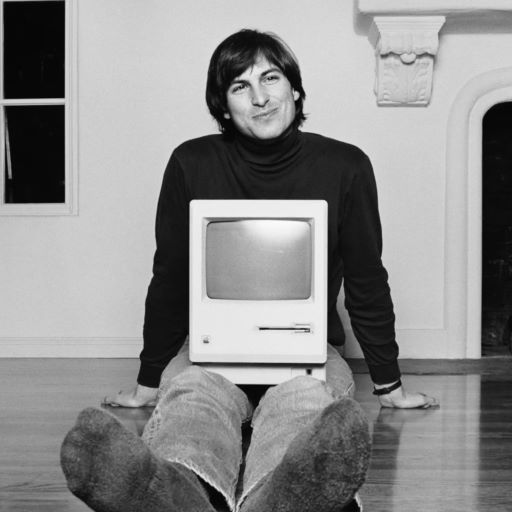

-
1955 - Born in San Francisco, California.
-
1973 - Attend, but later drops out Reed
College.
- 1973/1974 - Travel India.
-
1975 - Starts working on Apple I Computer
together with Steve Wozniak.
-
1976 - App Inc. was incorporated by Stive Jobs,
Steve Wozniak and Ron Wayne.
- 1976 - App I went on sale.
- 1984 - The first Macintosh.
-
1985 - Leaves Apple and started a new computer
firm NeXT.
- 1986 - Buys Pixar Animation Studios.
- 1991 - Marries Laurene Powel.
-
1993 - Toy Story work is haulted and becomes
NeXT Software Inc.
- 1996 - Apple buys NeXt for $400M.
- 2000 - Back as CEO at Apple Inc.
-
2001 - Release first iPod and Apple opens
retail stores.
-
2005 - Gives commencement speech at Stanford
University.
-
2007 - Introduction iPhone, Apple TV and iPod
Touch.
-
2009 - Takes medical leave for six months and
has surgery for liver transplant.
-
2010 - Introduces iPad, iPhone 4 and iPod Touch
4G and new Macbook Air.
-
2011 - Resigned his position as CEO of Apple
- 2011 - Passes away.

Steve Jobs on the floor with computer.